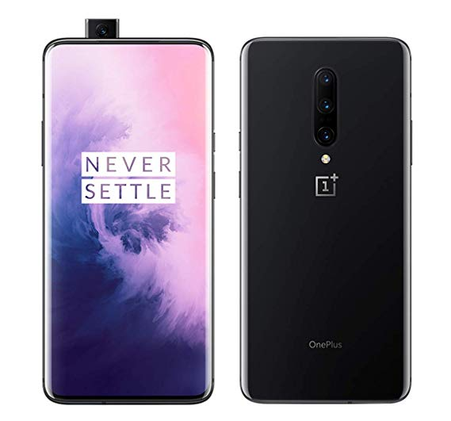
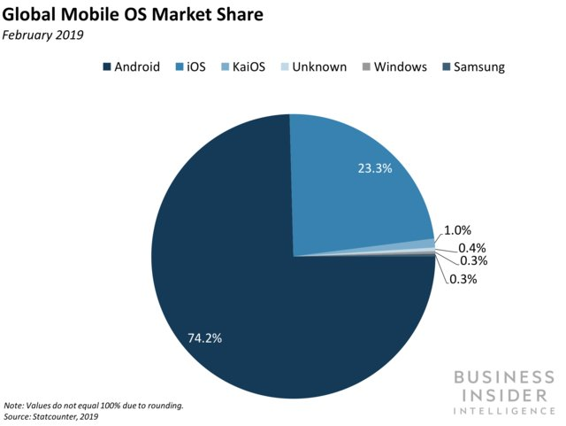

History of Android
Android was founded in 2003 and google bought android in 2005 it was orginally intended to be a an an os for digital camera's.After apple unveiled ios in 2007 google scrambled to create a mobile os that could rival apple's os.When apple showcased the first iphone it was much better than the htc dream which was the first android phone on the market.Ios was more stable,intuitive and visually appealing.So it was no suprise that the iphone would dominate the market early on as it was consider the phone to beat.Google was at disadvantage compared to apple since were late to the smartphone market.So to overcome this handicap google decide to introduce the open handset alliance which would essientially allow other phone manafacturers to run android on there phones.This was google's ultimate plan to wdominate the smartphone Market.This along with the open source nature of android are th primary causes for the fast progression of android.Android is currently the most popular smartphone os.
About Android
Android is a mobile operating system that runs on thousands of different phone models created by many different phone manafacturers.Android shares many similarities with ios both oses have a notification center,gesture based navigation,quick settings etc.However android has some key differences that seperate it from ios.One big difference is the customization on android your allowed to customize almost anything you can set default apps,change your launcher,change your lockscreen,remap hardware buttons and you can even use a different gesture navigation system like fluid navigation gestures. Android is very customizable and this is a strength for android.Android gives users more control and freedom compared to ios.On android users are not restricted to installing apps from the google playstore which comes preinstalled on all android phones they can also install apps from any source as long as the application has the .apk file extension which means it was created for android.Android also allows apps to have more permissions as well which means developers can be more creative with the types of applications they create.Some examples of unique or intresting android only applications are tasker-an automation application that allows you to automate many different tasks.Parallel spaces-An application that allows you to clone applications on your phone so you can run two accounts simultanueously. Another big adavntage of android is access to the file system which is something you don't get with ios.With android users have access to a centralized filesystem where files created by apps are stored this is different from ios where only apps have access to the files they create and user are unable to access these files using a file manager.Android also has great features like pip,splitscreen multitasking,multiple user accounts etc. Overall android is a very powerful operating system that can satisfy both average users and tech enthusiasts
Hardware variety
Android marketshare
Today Phones running android make up about 80% of the global marketshare.Android has become the most popular mobile os due to the competitve pricing,hardware variety and innovation of the android platform.
